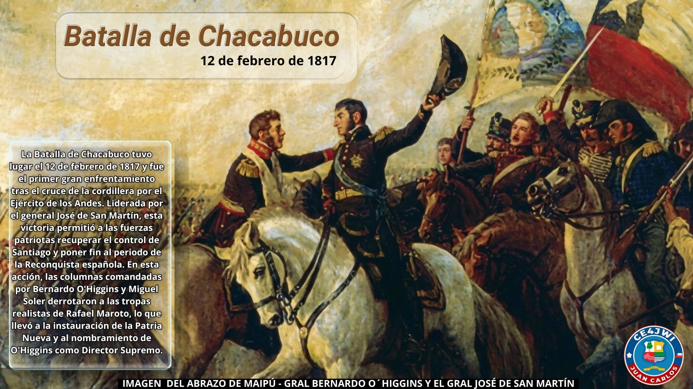

12 de Febrero 2026

La Batalla de Chacabuco
La Batalla de Chacabuco, librada el 12 de febrero de 1817, fue el enfrentamiento decisivo que marcó el inicio de la Patria Nueva en la independencia de Chile
En esta batalla, las fuerzas patriotas lideradas por el General José de San Martín y el General Bernardo O'Higgins se enfrentaron a las tropas realistas comandadas por el General Rafael Maroto. La victoria patriota en Chacabuco fue crucial para asegurar la independencia de Chile, ya que permitió a los patriotas tomar control de Santiago y consolidar su posición en la lucha contra el dominio español.
La Batalla de Chacabuco es recordada como un hito fundamental en la historia de Chile, simbolizando la valentía y determinación de los patriotas en su lucha por la libertad y la independencia.
En conmemoración de esta importante batalla, se realizan diversas actividades y eventos en Chile cada 12 de febrero, recordando el sacrificio y la valentía de aquellos que lucharon por la independencia del país.
La travesía de los Andes
La batalla fue la culminación de una hazaña logística enorme: el Ejército de los Andes cruzó la cordillera a comienzos de 1817 por varios pasos al mismo tiempo, en columnas que partieron desde Mendoza. Los patriotas caminaron durante semanas por pasos que superan los tres mil metros de altura, arrastrando cañones, municiones y ganado para abastecer a las tropas.
El plan de San Martín buscaba sorprender a los realistas en Chile, que esperaban un ataque por el sur. La estrategia funcionó: la victoria se definió en apenas unas horas.
El costo de la victoria
La victoria no fue gratis: el general Bernardo O'Higgins fue herido en un brazo durante el asalto y debió ser atendido en el mismo campo de batalla. Pese a ello, esa misma noche San Martín y O'Higgins entraron a Santiago entre el entusiasmo de los vecinos, y pocos días después se constituyó la nueva autoridad patria.
Poco más de un año después, la independencia de Chile se consolidó con la victoria de Maipú, el 5 de abril de 1818.
La cuesta de Chacabuco, escenario del combate, se ubica en la cordillera de la Región Metropolitana y está declarada Monumento Nacional. Quienes la recorren hoy pueden imaginar el paso de miles de soldados por esos mismos cerros en 1817.
COMO RADIOAFICIONADO REALIZARÉ ESTA ACTIVIDAD A UN SOLO CONTACTO